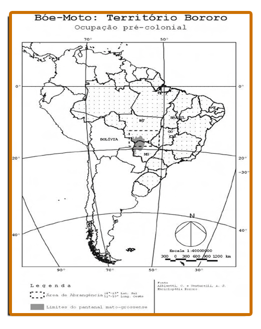

BORORO: BÓE “GENTE VERDADEIRA OU HOMEM VERDADEIRO”
Figura 01: Crianças Bororo
Fonte: FSylvia Caiuby Novaes, 1973 -
Disponível em: pib.socioambiental - acesso dia em 02 de Mar. 2020.
1.1 Atualmente
Na atualidade, os Bororo habitam seis terras indígenas demarcadas no estado de Mato Grosso e de acordo com o site oficial da Fundação Nacional do Índio (FUNAI), essas Terras Indígenas (TI), as aldeias estão localizadas nos Municípios: Aldeia Meruri em Barra do Garças e General Carneiro,
Aldeia Perigara em Barão de Melgaço,
Aldeia Sangradouro/Volta Grande, em General Carneiro, Novo São Joaquim e Poxoréo,
Aldeia Tadarimana em Rondonópolis e Pedra Preta,
Aldeia Jarudore em de Poxoréo e
Aldeia Tereza Cristina em Santo Antônio de Leverger.
No entanto as aldeias
Jarudore e Tereza Cristina segundo o site – Povos Indígenas no Brasil – Instituto Socioambiental (ISA, 2020) vem enfrentando problemas:
[...] a TI Jarudori foi reservada aos índios pelos SPI (Serviço de Proteção ao Índio), mas foi sendo continuamente invadida, a ponto de hoje estar totalmente ocupada por uma cidade; já a TI Teresa Cristina está sob júdice, uma vez que sua delimitação foi derrubada por decreto presidencial. (ISA,2020).
Do mesmo modo que o site Povos Indígenas no Brasil informa que na região de Cáceres e Vila Bela, onde viviam no Alto Paraguai desapareceram em meados do século XX, por isso não tem terras indígenas para este povo nesta região da fronteira Oeste.
No entanto, a historiadora Anna Maria R. F. M. Costa (2015, p. 205) afirma que a do Alto Paraguai, a documentos produzidos por Marechal Rondon indica a presença de Bororo Ocidental trabalhando nas fazendas charqueada no Pantanal, principalmente em campos do Descalvado. Portanto, a localização destes povos indígenas nesta região de Cáceres Mato Grosso precisa de pesquisas para identificação dos remanescentes dos povos indígena Bororo.
2. Aspectos Históricos e Culturais dos Bororo
O povo indígena Bororo, segundo Rocha (2009, p. 19) em
Guerreiros Cabaçais: A Luta deste Povo Bororo Pela Sobrevivência na Região do Guaporé se autodenominam Bóe que tem o significado de “[...] gente verdadeira ou homem verdadeiro”. Assim como, o significado da palavra Bororo na língua dos nativos, é o pátio da aldeia, local importante para a cultura dos Bororo, onde realizavam-se a maioria dos rituais, como o funeral.
Temos que frisar que o termo Bororo foi muito utilizado para identificá-los, mas que ao longo da história, outros nomes também foram usados para identificar membros desse mesmo grupo, tais como: “Coxiponé, Araripoconé, Araés, Cuiabá, Coroados, Porrudos, Bororo Aravirá ou da Campanha, Bororo Cabaçal, entre outros”
(ROCHA, 2009, p. 24).
Mapa 01: Território Bororo – Ocupação Pré-colonial

Fonte: PORTO CARRERO, José Afonso Botura, (2001, p. 20)
No entanto, com a chegada dos colonizadores, os povos indígenas Bororo ao longo do tempo foram reduzindo seu território tradicional e populacional e ao mesmo tempo, permanecem lutando para continuarem a sua história. Perca de território segundo Almeida (2002) foi a partir dos primeiros contatos com os colonizadores portugueses, suas terras foram sendo invadidas e iniciaram cada vez mais perder seu território tradicional e também “situações de apresamento” e neste contexto ocorreu:
[...] a divisão dos Bororo a partir do contato com os civilizados, orientando-se pela localização geográfica e tendo como referência o rio Cuiabá. Nesta perspectiva, os Bororo que foram habitar a oeste receberam a denominação de Ocidentais, e os que permaneceram a leste ficaram conhecidos por Orientais. (ALMEIDA, p. 28).
Lecy Figueiredo Rocha (2016, p. 86) destaca que esta migração dos Bororo para Oeste pode ser interpretada como uma forma de resistência ao colonizador, pois “os Bororo nunca deixaram de impor resistência”. E, de acordo com Almeida (2002), os Bororo Orientais que permaneceram no lado Leste da província, ficaram conhecidos como Bororo Orientais ou Coroado, no lugar onde atualmente encontram-se.
Enquanto, os Bororo Ocidentais migraram para o Oeste, subdividindo-se em dois principais grupos: Bororo da Campanha e os Cabaçal, indo habitar nas imediações dos rios Jauru e Cabaçal.
Essas divisões entre Bororo Oriental e Ocidental podem ser compreendidas, na conformidade do Mapa 03, feito por Christian Feest (2012, p. 81):
Mapa 02: Os Bororos séculos XIX e XX
|
Fonte:Christian Feest (2012, p. 81). Disponível em: Bororo A joia da Coroa para Antropologia Acesso em 10/05/2020.
Todavia, nesta região dos Bororo da Campanha e Cabaçal (Bororo Ocidental) onde foi fundada Vila Maria, depois São Luiz de Cáceres (região de Cáceres – MT) hoje não têm TI pertencente aos Bororo. Mas existem algumas pesquisas como de Edir Pina (1990), Renate Vitler (1990). Oliveira (2016, p. 121) que apontam remanescentes que vivem principalmente na região de Cáceres e destaca que “seria necessário um estudo
profundo sobre estes remanescentes”.
1.3 Língua dos povos Bororo
Figura 01: Bororo, de frente e de lado
Fonte: Hercule Florence (1827, p. 189)
Em relação ao tronco linguístico, Rocha (2009) não considera que os Bororo pertençam aos principais grupos linguísticos: Jê, Tupi, Aruak e Karib. Segundo Rocha (2009, p. 28) “os estudos de Greg Urban apontam atualmente para o “tronco linguístico Macro-Jê”.
3. Atividades Desenvolvidas dos Povos Indígenas Bororo
Os Bororo antes da chegada dos colonizadores portugueses, era a atividade de coletar frutos silvestres. Assim como as atividades de caça, pois são exímios caçadores. Cruz (2014) destaca a característica nômades desse povo, afirmando que no “[...] período da seca que a população Bororo seguia um ritmo de vida nômade, realizando as grandes migrações denominadas
Magúru” (CRUZ, 2014, p. 62).
Antes do contato com os colonizadores, os Bororo tinham um vasto território que permitia seus deslocamentos de lugar para outro em busca de alimentos. Migrando no período da seca e buscando uma rota que poderia oferecer o sustento para a sua sobrevivência. Por outro lado, no período chuvoso de acordo com historiador Cruz (2014) tornavam-se sedentário:
Na estação das chuvas dedicavam-se ao plantio de espécies de milho, cabaças, algodão, tubérculos, abóboras. Este tempo de chuvas determinava um período de vida sedentária e a ocorrência dos ciclos cerimoniais, principalmente daqueles identificados com a agricultura. A pesca também era condicionada pelo ritmo das enchentes. (CRUZ, 2014, p. 62).
Desse modo, a principal atividade de trabalho do povo Bororo não era a produção agrícola. Entretanto, isto não significa que não praticavam a agricultura. De fato, faziam pequenas roças, consideradas bem rústicas. Oliveira (2016) descrevia a roça Bororo da seguinte forma:
O local era escolhido numa clareira já feita pela própria natureza, região de mata, onde a terra era mais fértil. Os homens faziam a derrubada das árvores menores usando o Paratori (Machado de pedra) e em seguida completavam a limpeza do local com o fogo. O cultivo, desde a plantação, cuidados e colheita, era tarefa elementarmente das mulheres. (OLIVEIRA, 2016, p. 59).
Ressaltamos também a divisão de tarefas entre homens e mulheres na época da seca
(Magúru) quando realizavam viagens
longas, as mulheres acompanham e “[...] coletavam com habilidade frutas, cocos, pequis, jatobás, carás, palmitos, sementes de camaru, caules de palmeiras e mel silvestre”. (OLIVEIRA, 2016, p. 59).
Neste período da
Magúru, o antropólogo também destaca que durante esta migração, o sucesso da jornada do grupo passava pelas funções que eram bem definidas entre os homens e as mulheres. Assim “[...] cabia à mulher carregar os filhos e os utensílios necessários, ambos constituindo pesada carga. O esposo carregava somente o arco e a fecha, estando assim sempre pronto para uma possibilidade de caça ou praticar a defesa do grupo e da família. (OLIVEIRA, 2016, p. 61).
Esta divisão de tarefas aparece representada nos desenhos feitos pela comitiva de Hercule Florence (1827) ao integrar a expedição chefiada pelo cônsul Langsdorff e financiada pelo governo Russo ao interior do Brasil entre os anos de 1825 a 1829. Reencontrou com indígenas Bororo em Vila Maria (atual, Cáceres- MT), à espera de uma canoa que os levaria para conhecer à embocadura do rio Jauru e presenciou a chegada dos Bororo e, descreve que as mulheres carregavam além das crianças menores e também “esteira” grande onde eram armazenados os objetos do grupo, bem como os alimentos (desde a caça aos frutos coletados) enquanto os homens andavam com seu arco e flechas.
Na ocasião retardou sua partida para produzir ilustrações com riquezas de detalhes, e ao descrevê-los, assim como, fez críticas
pontuais sobre o comportamento dos homens indígenas perante as suas esposas indígenas Bororo:
[...] parece ter 40 anos; mostra-se alegre e é um tanto cheia de corpo. Carrega às costas um fardo, que posto em terra era da altura dela. Esse fardo compõe-se de esteiras, couros, peles enroladas, e jacás cheios de vários objetos, peso enorme para essas infelizes mulheres que são os animais de carga daqueles índios. [...] Desenhei também ainda um rapaz e uma menina. Aquele não carregava senão um arcozinho e fechas, ao passo que esta levava já um cesto com diversas coisas, pouco pesada em verdade. (FLORENCE, 1827, p. 201 e 204).
A partir dessa narrativa podemos visualizar suas descrições pelos desenhos feitos pela comitiva do viajante Hercule Florence (1977) durante a sua passagem por Vila Maria, conforme se vê abaixo:

Figura 04: Mulheres Bororo com grande carga em Vila Maria
Figura 03: Homem Bororo
Fonte: Hercules Florence (1977, p. 202 e 203)
As ilustrações produzidas durante a viajante Hercule Florence representam cenas do cotidiano em Vila Maria, e nas quais podemos perceber que registram como os Bororo dividiam as tarefas entre os homens e mulheres para praticarem a caça e a
coleta, conforme foi explicado por Oliveira (2016).
Devemos destacar que os povos indígenas têm suas especificidades, pois não são iguais. Nesse sentido, para dar um exemplo, destacamos o uso do estojo peniano pelos Bororo, retratado por Johann Natterer em 1826 e por Lévi-Strauss em 1925 e, ainda
descrito por Christian Feest:
Natterer informou sobre as Bororo da Campanha: “Eles andam completamente nus. A única cobertura usada pelos homens é uma tira da largura de um dedo feita de uma folha da palmeira babaçu, trançada de modo a formar um anel, colocado na ponta do órgão sexual, que é direcionado para cima, preso a um barbante que lhes envolve a cintura”. Mais de um século depois, Lévi-Strauss observa o seguinte acerca dos Bororo Orientais de Quejare: “Os homems estavam completamente nus, salvo o pequeno estojo de palha que encobria a extremidade do pênis e era mentido preso pelo prepúcio”. Observe-se a pequena diferença em relação aos Bororo da Campanha. (FEEST, 2012, p. 83).
Figura 05: O uso do estojo peniano entre os Bororo
Fonte: Christian Feest (2012, p. 83). Acesso em 10/05/2020 Disponível em: Researchgate
Percebe-se as especificidades de cada um, cujos desenhos anteriores, representam a preocupação com a proteção dos órgãos sexuais masculinos feita pelos Bororo, destacado pelos pesquisadores citados. Sendo que, o primeiro desenho à esquerda feito por Johann Natterer (1826) refere-se ao Bororo da Campanha, enquanto o segundo desenho à direita representa um Bororo Oriental da aldeia de Quejare, baseada numa foto de Lévi-Strauss feita em 1925 (Lévi-Strauss 1957: 227).
4. Baìto: “A casa dos homens” - Organização Social dos Bororo
Figura 02: Vista da aldeia dos índios Bororo, chamada Pau-Seco, situada a 7 léguas do Paraguai e em seu lado esquerdo, no caminho de Vila Maria a Vila Bela de Mato Grosso”. Taunay, 1827
Fonte: Disponível em: Folhadomeio.com.br
Os Bororo, um povo que tem uma explicação para o seu ressurgimento na terra exposto na
Enciclopédia Bororo, citado por Almeida (2002) explicou um dos mitos Bororos registrados pelos salesianos César Albisetti e Ângelo Venturelli, o mito
Meríri Póro. Segundo esse mito, a origem Bororo ocorreu quando:
[...] a região onde moravam sofreu uma grande inundação, que cobriu quase todo o território e causou a morte do povo Bororo, exceto a de um índio, Meríri Póro. Este sobrevivente ficou sobre o cume de um morro, único lugar que as águas não cobriram, e ali, para se aquecer, acendeu uma fogueira com restos de madeira e pedras. Quando as pedras ficavam incandescentes, ele as jogava nas águas, provocando com isso a evaporação e o retorno delas ao nível normal. Mais tarde, Meríri Póro encontrou um animal que também havia sobrevivido à inundação, uma cerva, com quem procriou, construindo aldeias e reiniciando a povoação da terra. (ALMEIDA, 2002, p. 24).
De acordo com mito, a união de
Meríri Póro com o animal cerva, resultou no nascimento de filhos que nasceram com semelhanças a mãe (animal), foram sacrificados, e os que nasceram com semelhanças ao pai (humano), sobreviveram, dando início ao ressurgimento do povo Bororo. Assim como, reconstruíram a aldeia com os mesmos traços e formato antes da inundação.
O formato das aldeias é uma característica importante da cultura dos povos Bororo, segundo Portocarrero (2000, p. 37) “A construção começa, segundo a lenda pelo
Bái mána gejéwu ou baìto, forma comum usada pelos Bororo para designar a casa dos homens”. Desta maneira, as casas eram confeccionadas ao redor de um grande círculo e no meio do círculo é construída a casa dos homens
(Bái mána gejéwu ou Baito). Sendo a
Baí/Baíto destinada para os rapazes solteiros, que são obrigados a deixar a casa da mãe e viver neste local quando se tornam adolescentes. Iniciando, assim o seu processo de formação material e espiritual. E, só sai quando for constituir sua própria família. Por outro lado, as moças permanecem na casa da mãe.
Para Almeida (2002) em torno do círculo, várias casas são construídas, sendo divididas por clãs, no qual cada clã tem um espaço reservado e representado por um totem, isto é, um animal “[...] que se faz presente em manifestações culturais como nascimento, casamento, funeral e outros.” (ALMEIDA, 2002, p. 25). Assim como, dentro dos clãs tem uma hierarquia diferente e não devem morar juntos em uma mesma casa, formando outra subdivisão.
Outro fator que chama atenção é que geralmente a
Baí(casa) fica próxima de um curso d’água, como destaca Almeida ao descrever as características das aldeias deste povo:
Os Bororo habitam em aldeias geralmente construídas em terrenos inclinados, próximos a um curso d’água, tendo em sua composição aspectos da natureza. As aldeias possuem formação circular em duas metades exógamas: a metade Ecerae, composta pelas casas na posição sul, e Tugarege, ocupando a posição norte, no centro há uma grande casa, o Baíto, que é circundada por um pátio, o Bororo; ou seja, o nome que os conquistadores atribuíram a esses indígenas corresponde ao grande espaço interno das suas aldeias. (ALMEIDA, 2002, p. 25).
Observar a figura 02 através de uma foto da antropóloga Novaes (1971) facilita a compressão e ilustra de como era o formato da aldeia Bororo:
Figura 01: Vista aérea de uma aldeia Bororo
Fonte: Sylvia Caiuby Novaes, 197. Acesso em 03/03/2002. Disponível em: socioambiental
Outro fator importante, segundo Almeida (2002, p.26) é a formação de novas famílias na cultura do Bororo. Quando o homem se casa com a mulher, o clã deve ser diferente da sua família, bem como este é obrigado a acompanhar a esposa, mudando-se para a casa da mãe de sua mulher, e os futuros filhos passam a pertencerem ao subclã da família da esposa e adquirem sobrenomes do clã.
Este modelo de família é classificado como matrilinearidade ou organização de um povo, grupo populacional, família, clã ou linhagem em que a descendência é contada em linha materna. E segundo Almeida (2002 p. 26) a mulher “é a responsável direta pela conservação e propagação do seu subclã”.
4. Crenças dos Povos Indígenas Bororo
No momento atual, a organização social da sociedade Bororo ainda conserva elementos importantes de sua cultura e podemos destacar a contínua valorização do Funeral que em termos rituais é considerado um dos traços culturais mais importantes da sociedade Bororo. O Funeral pode levar alguns dias ou até três meses. A despeito disso Tolentino (2009, p. 238) em seu artigo:
Ética Bororo: a sobrevivência de um povo descreve que funeral “é um importante momento de expressão artística, de socialização e de integração cultural dos mais jovens, de perpetuação da memória dos antepassados e, paradoxalmente, de reafirmação da vida.”
Para Oliveira (2016) em sua dissertação O
Jorubo e o Meriri Ikureu Oiagadu Rogu Encontro Intercultural e Poder entre os Bororo da Aldeia Meruri : descreve o
Itága, o funeral, desde o primeiro momento quando o moribundo não teve uma morte súbita. Realiza-se a ornamentação do doente, iniciando com a preparação do corpo com plumas de animais e pinturas corporais e faciais. Segundo Oliveira (2016, p. 76), essa preparação é “[...] como se fosse participar de uma festa”. A partir do momento que falece, segundo suas crenças, a pessoa passa a ser alma. Outra característica do funeral é que as mulheres e crianças não podem ver o rosto do morto, que é coberto por uma esteira, enquanto acontece cantos entoados com choros e gritos de parentes e amigos
.
;Além disso, Oliveira (2016, p.77) pontua outros rituais, entre eles, o ritual da escarificações, no qual “Riscavam o próprio corpo até brotar sangue, a qual cai abundantemente sobre o falecido coberto pela esteira.” Essa manifestação é mantida até a realização do primeiro enterro em uma cova provisória e rasa no pátio da aldeia.
Oliveira (2016) também destaca que durante vários dias no período da tarde os parentes do falecido jogam água em cima da cova para acelerar a decomposição do corpo. Enquanto isso, a aldeia se prepara para o enterro definitivo, quando o corpo é exumado e os restos mortais (ossos) passavam por uma lavagem e são enfeitados para serem finalmente colocados em um cesto proporcional aos seus restos mortais e levados ao rio mais próximo da aldeia, quando finalmente são depositados no fundo das águas.
Cabe aqui registrar o Site Funeral Bororo disponível em -
bororo.museuvirtual - desenvolvido pela Universidade de Brasília, sobre o ritual do funeral Bororo com um vasto acervo (fotografias e audiovisuais) coletados entre os anos 1985 e 1986. Assim, com o propósito de resgatar o acervo e disponibilizar para a sociedade em geral o ritual mais importante da sociedade Bororo com os registros capturados pelas câmaras fotográfica e audiovisual onde mostra as cinco etapas do funeral dos Bororo da seguinte forma conforme narrativa:
A primeira etapa é o
Moribundo – Quando a morte não é repentina, o doente que está próximo do fim de sua vida e diagnosticado por um xamã das almas dos mortos (o Aroe Etawarare), iniciando o ritual fúnebre. O xamã prevendo a morte do doente suspende a alimentação do moribundo que aceita seu destino de forma pacífica e seu corpo começa a ser preparado para a morte, pintando o seu corpo com urucum e também é enfeitados com plumas e penas iniciando o longo ritual do funeral.
A segunda etapa é o
Primeiro Enterro, quando de fato morre o moribundo ao perder o sopro vital ele será enterrado em uma cova rasa no pátio central da aldeia, com todo um ritual para o cortejo, onde as mulheres e crianças não podem ver rosto, e a partir deste momento começa o processo de decomposição, pois sua cova será regada diariamente para acelerar o processo de decomposição.
Terceira Etapa é
A Exumação – durante o processo de decomposição do corpo na cova rasa, na aldeia é preparado ritual aije envolvendo os rapazes para iniciação que permite o acesso aos segredos do mundo ancestral, momento importante para os jovens, pois somente depois desta iniciação poderão constituir família. E quando ocorre a decomposição do corpo, os restos mortais do defunto é retirado da cova e passa por um processo de lavagem no rio mais próximo da aldeiae depois serão colocados em um cesto de palha e os ossos serão ornamentados na casa dos homens e a partir deste momento, serão três dias de rituais com músicas e danças.
Quarta etapa é a
Ornamentação dos Ossos e o Cortejo Final – esta etapa em local especifico na aldeia os ossos (casa dos homens), as mulheres e crianças não pode ver esta etapa do funeral, é o momento de maior comoção onde as mulheres ligadas ao morto fazem a escarificação, (são cortes feitos com cacos de vidro pelo seu corpo) que é acompanhados de cantos e ao mesmo tempo choros. Depois cumprir todos os rituais do funeral e colocado em um cesto maior e costurado, ele é depositado em uma urna funerária e finalmente é levado para águas do rio e depositado no fundo.
Quinta etapa é
Mori –
A vingança do Morto – a última etapa é quando a pessoa que representa o morto vinga o falecido através da caça de um grande felino, que tem um significado de resgate do sopro da vida. E a pele do animal será entregue a mãe ritual do morto e depois entregue a família do morto (homens) e os dentes são retirados e entregue as mulheres da família do morto.
Com este ritual acredita que o morto não poderá intervir na vida dos que seguem vivos na aldeia, pelo fato de estar satisfeito com tudo que foi realizado no ritual do funeral, podendo viver sua alma de forma semelhante à terrena em uma aldeia que o mesmo escolher para essa nova etapa da sua vida.
O que percebe-se que este é um momento importante cultura das nações dos povos indígenas Bororo. Os valores humanos e o respeito ao outro membro da comunidade são demostradas durante o ritual do funeral Bororo, como podemos observar nos registros fotográficos feito pelo fotografo Kim-Ir-Sen Pires Leal realizadas entre os anos 1985 à 1986 que segue abaixo:
Fotos comas Imagens do Ritual Funeral Bororo
1ª Etapa – o Moribundo 2ª Etapa – Primeiro Enterro
3ª Etapa – a Exumação 4ª Etapa –Ornamentação dos Ossos e Cortejo Final Enterro
5ª Etapa – Mori – A vingança do Morto
Fonte: Kim-Ir-Sen Pires Leal (1986) Disponível em: Bororo.museuvirtual.unb.br
Por Luciana Martinez de Oliveira Costa.
COSTA, Luciana Martinez de Oliveira. A Presença de Povos Indígenas Chiquitano, Bororo, Guató e Guaná em Vila Maria do Paraguai e São Luiz de Cáceres (1778-1874): Uma Abordagem de Temática Indígena Na Educação Básica. Cáceres, 2020. Dissertação (Mestrado Profissional ProfHistória), Unemat.
Link da dissertação completa
5. REFERÊNCIAS BIBLIOGRÁFICAS
ALMEIDA, Marli Auxiliadora. CibáeModojebádo – A Rosa Bororo e a “pacificação” dos Bororo Coroado. Cuiabá, MT. 2002. Dissertação (Mestrado em História), UFMT.
“Índios Fronteiriços”: A política indigenista de fronteira e políticas indígenas na Província de Mato Grosso entre a Bolívia e o Paraguai (1837-1873). Porto Alegre, RS. 2013. Tese (Doutorado em História), UFRS
CRUZ, Paulo Divino Ribeiro.A Colonização Agroindustrial do Cerrado em Mato Grosso (1970 – 2000). Assis, SP. 2014. Tese (Doutorado em História). UNESP.
FEEST, Christian. Bororo: A joia da Coroa para Antropologia. 2012. Disponível em
Bororo: A joia da Coroa para Antropologia
FLORENCE, Hércules. Viagem do Tietê ao Amazonas de 1825 a 1829. Trad. Editora Cultrix, Universidade de São Paulo, 1977.
FUNAI. Terras indígenas. Disponível em
Funai.gov.br
Funeral Bororo. Universidade de Brasília. UnB. Brasília. Disponível em:
bororo.museuvirtual.unb.br
PORTOCARRERO, José Afonso Botura. Bái, a casa Bóe: Bái, a casa Bororo: uma história da morada dos índios Bororo. Cuiabá, MT. 2001. Dissertação (Mestrado em História), ICHS-UFMT.
ROCHA, Lecy Figueiredo. Guerreiros Cabaçais: A Luta deste Povo Bororo Pela Sobrevivência na Região do Guaporé. Jundiaí: Paco Editorial, 2016.
OLIVEIRA, Eloir Inácio (2016). O Jorubo e o Meriri Ikureu Oiagodu Rogu – Encontro Intercultural e Poder entre os Bororo da Aldeia Meriri. São Paulo, SP. 2016. Dissertação (Mestrado em Ciências Sociais/Antropologia), CSPUC PEC SP.
serpa, paulo. povos indígenas no brasil: bororo. isa – instituto socioambiental. são paulo, 2014. disponível em:
pib.socioambiental.org .
URBAN, Gred. A História da Cultura Brasileira, Segundo as Luinguas Nativas. In: Cunha, Manuela Carneiro (Org). Histpória dos índios no Brasil. São Paulo: Companhia das Letras, 1989, p. 87 – 102.